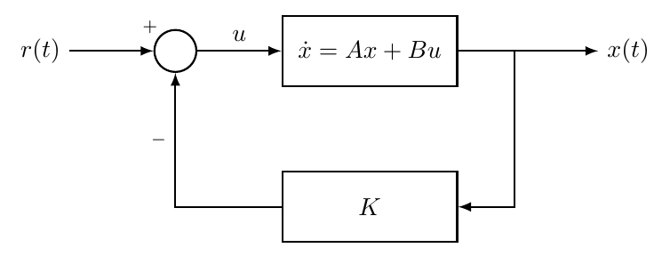
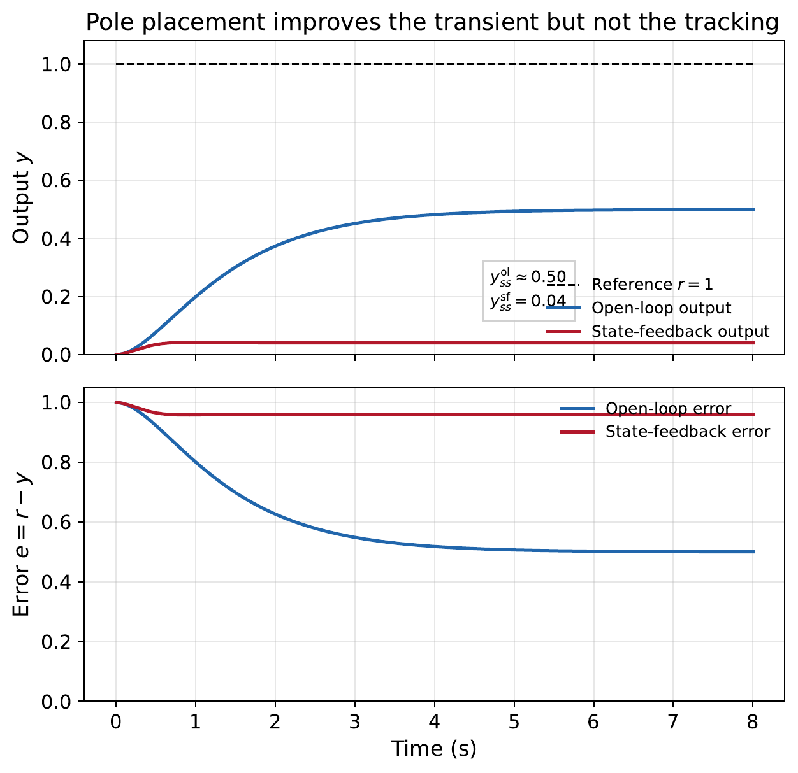
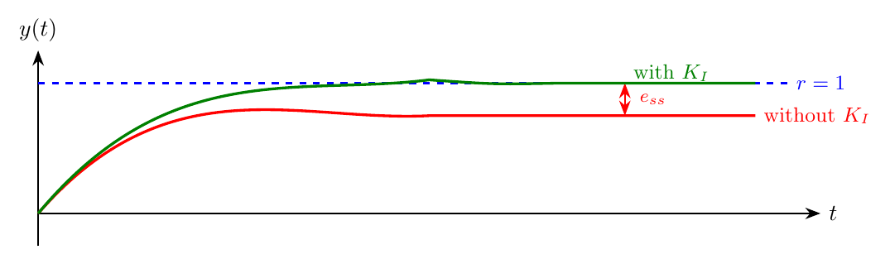
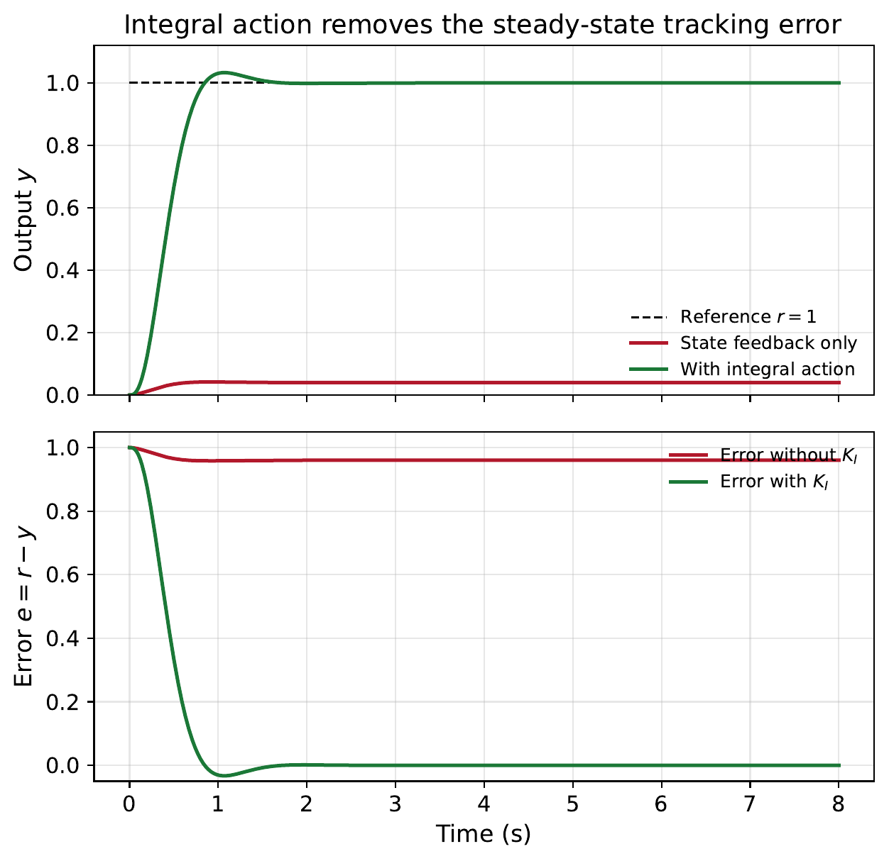
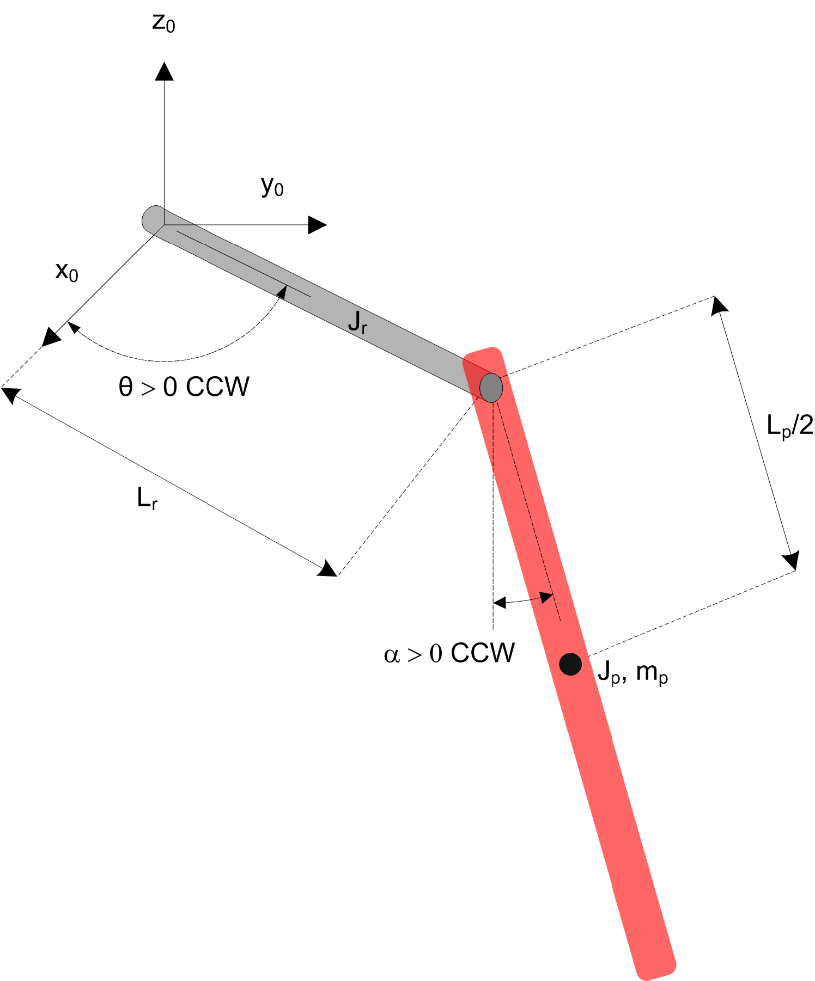
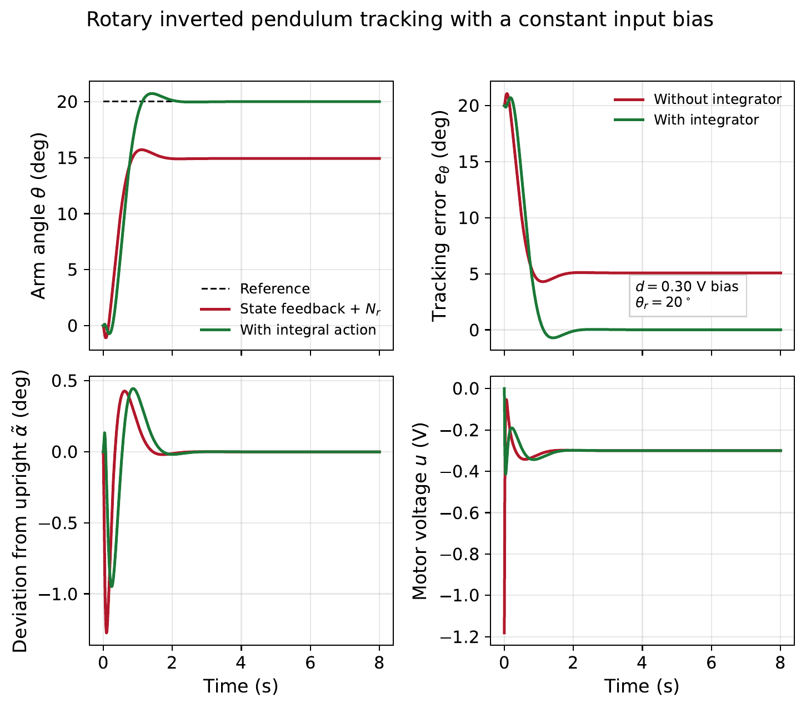

“With PID, you tune three knobs and hope for the best. With state feedback, you choose exactly where the closed-loop poles go.”
Instead of feeding back only the output error, state feedback feeds back the entire state vector \(x(t)\). This gives \(n\) gains to choose (one per state variable), which is exactly enough to place all \(n\) closed-loop poles at any desired locations — provided the system is controllable (Chapter 8).
Learning Objectives After completing this chapter, you should be able to:
Explain the state feedback control law \(u = -Kx + r\) and derive the closed-loop system matrix \(A - BK\).
Translate time-domain specifications (settling time, overshoot) into desired pole locations.
Compute the feedback gain \(K\) by direct comparison of characteristic polynomials.
Apply Ackermann’s formula to find \(K\) for single-input systems.
Use MATLAB’s place() and acker() commands for pole placement.
Design state feedback with integral action to achieve zero steady-state tracking error.
Consider a controllable system in state-space form: \[\dot{x}(t) = Ax(t) + Bu(t), \qquad y(t) = Cx(t).\]
The state feedback control law is:
\[\begin{equation} u(t) = -Kx(t) + r(t) \label{eq:sf_law} \end{equation}\] where \(K \in \mathbb{R}^{1\times n}\) is the feedback gain vector and \(r(t)\) is the reference input.
Substituting into the state equation: \[\dot{x} = Ax + B(-Kx + r) = (A - BK)x + Br.\] The closed-loop system matrix is \(A_{cl} = A - BK\). The closed-loop poles are the eigenvalues of \(A - BK\).

The key result: the closed-loop characteristic polynomial is \[\det(sI - A + BK) = 0.\] By choosing \(K\), we can place the roots of this polynomial (the closed-loop poles) at any desired locations, if and only if \((A,B)\) is controllable.
If the system is not controllable, some modes cannot be influenced by the input. No choice of \(K\) can move those poles. Controllability (Chapter 8) is therefore a prerequisite for pole placement.
The simplest method to find \(K\) is to compare the closed-loop characteristic polynomial with the desired one.
Choose desired poles \(p_1, p_2, \ldots, p_n\) based on performance specifications (settling time, damping, etc.).
Form the desired characteristic polynomial: \[\alpha_d(s) = (s - p_1)(s - p_2)\cdots(s - p_n) = s^n + \alpha_1 s^{n-1} + \cdots + \alpha_n.\]
Compute the closed-loop characteristic polynomial \(\det(sI - A + BK)\) symbolically in terms of \(K = [k_1 \; k_2 \; \cdots \; k_n]\).
Match coefficients: equate the coefficients of each power of \(s\) to get \(n\) equations in \(n\) unknowns \(k_1, \ldots, k_n\).
Consider the mass–spring–damper from Chapter 3: \[A = \begin{bmatrix} 0 & 1 \\ -2 & -3 \end{bmatrix}, \quad B = \begin{bmatrix} 0 \\ 1 \end{bmatrix}, \quad C = \begin{bmatrix} 1 & 0 \end{bmatrix}.\] The open-loop poles are the eigenvalues of \(A\): \[\det(sI - A) = s^2 + 3s + 2 = (s+1)(s+2).\] So the open-loop poles are at \(s = -1\) and \(s = -2\) (stable, but slow).
Specification: We want the closed-loop system to have \(\zeta = 0.7\) and \(\omega_n = 5\) rad/s. The desired poles are: \[p_{1,2} = -\zeta\omega_n \pm j\omega_n\sqrt{1-\zeta^2} = -3.5 \pm j3.57.\] The desired characteristic polynomial is: \[\alpha_d(s) = s^2 + 2\zeta\omega_n\, s + \omega_n^2 = s^2 + 7s + 25.\]
Find \(K\): Let \(K = [k_1 \; k_2]\). Then \[A - BK = \begin{bmatrix} 0 & 1 \\ -2 & -3 \end{bmatrix} - \begin{bmatrix} 0 \\ 1 \end{bmatrix}\begin{bmatrix} k_1 & k_2 \end{bmatrix} = \begin{bmatrix} 0 & 1 \\ -2-k_1 & -3-k_2 \end{bmatrix}.\] The closed-loop characteristic polynomial is: \[\det(sI - A + BK) = s^2 + (3+k_2)s + (2+k_1).\] Matching with \(s^2 + 7s + 25\): \[\begin{align*} 3 + k_2 &= 7 \quad \Rightarrow \quad k_2 = 4, \\ 2 + k_1 &= 25 \quad \Rightarrow \quad k_1 = 23. \end{align*}\] Therefore \(K = \begin{bmatrix} 23 & 4 \end{bmatrix}\).
Verification: \[A_{cl} = A - BK = \begin{bmatrix} 0 & 1 \\ -25 & -7 \end{bmatrix}.\] Eigenvalues: \(s^2 + 7s + 25 = 0\) gives \(s = -3.5 \pm j3.57\). \(\checkmark\)
How do we translate time-domain specifications into pole locations? For a dominant second-order system:
Pole Location from Specifications
Settling time (\(2\%\) criterion): \(t_s \approx \dfrac{4}{\zeta\omega_n}\) \(\Rightarrow\) \(\sigma = \zeta\omega_n \approx \dfrac{4}{t_s}\)
Overshoot: \(M_p = e^{-\pi\zeta/\sqrt{1-\zeta^2}} \times 100\%\) \(\Rightarrow\) \(\zeta = \dfrac{-\ln(M_p/100)}{\sqrt{\pi^2 + \ln^2(M_p/100)}}\)
Desired poles: \(p_{1,2} = -\sigma \pm j\omega_d\) where \(\omega_d = \sigma\dfrac{\sqrt{1-\zeta^2}}{\zeta}\)
A system has \[A = \begin{bmatrix} 0 & 1 \\ -1 & -1 \end{bmatrix}, \quad B = \begin{bmatrix} 0 \\ 1 \end{bmatrix}.\] Specification: settling time \(t_s \leq 1\) s, overshoot \(M_p \leq 10\%\).
From \(M_p = 10\%\): \(\zeta = \dfrac{-\ln(0.1)}{\sqrt{\pi^2 + \ln^2(0.1)}} \approx 0.59\).
From \(t_s = 1\) s: \(\sigma = 4/1 = 4\), so \(\omega_n = \sigma/\zeta = 4/0.59 \approx 6.78\) rad/s.
Desired poles: \(p_{1,2} = -4 \pm j5.47\).
Desired characteristic polynomial: \(s^2 + 8s + 46\).
With \(K = [k_1\; k_2]\): \[\det(sI - A + BK) = s^2 + (1+k_2)s + (1+k_1).\] Matching: \(k_2 = 7\), \(k_1 = 45\). So \(K = [45\; 7]\).
When the system is already in controllable canonical form (CCF), the gain computation becomes trivial. Recall from Chapter 8 that the CCF has \[A_c = \begin{bmatrix} 0 & 1 & \cdots & 0 \\ \vdots & & \ddots & \vdots \\ 0 & 0 & \cdots & 1 \\ -a_n & -a_{n-1} & \cdots & -a_1 \end{bmatrix}, \quad B_c = \begin{bmatrix} 0 \\ \vdots \\ 0 \\ 1 \end{bmatrix}.\]
With \(K_c = [k_1 \; k_2 \; \cdots \; k_n]\), only the last row of \(A_c\) changes: \[A_c - B_c K_c = \begin{bmatrix} 0 & 1 & \cdots & 0 \\ \vdots & & \ddots & \vdots \\ -a_n - k_1 & -a_{n-1} - k_2 & \cdots & -a_1 - k_n \end{bmatrix}.\]
The closed-loop characteristic polynomial is \[s^n + (a_1 + k_n)s^{n-1} + \cdots + (a_n + k_1).\]
Comparing with the desired polynomial \(s^n + \alpha_1 s^{n-1} + \cdots + \alpha_n\), each gain is simply:
In controllable canonical form, the feedback gains are \[k_i = \alpha_{n+1-i} - a_{n+1-i}, \qquad i = 1, \ldots, n.\] In other words, subtract the original coefficients from the desired ones.
A system in CCF has \[A_c = \begin{bmatrix} 0 & 1 & 0 \\ 0 & 0 & 1 \\ -6 & -11 & -6 \end{bmatrix}, \quad B_c = \begin{bmatrix} 0 \\ 0 \\ 1 \end{bmatrix}.\] The open-loop characteristic polynomial is \(s^3 + 6s^2 + 11s + 6 = (s+1)(s+2)(s+3)\).
Desired poles: \(s = -5, -5, -5\) (all poles at \(-5\) for fast decay).
Desired polynomial: \((s+5)^3 = s^3 + 15s^2 + 75s + 125\).
The gains are: \[\begin{align*} k_1 &= 125 - 6 = 119, \\ k_2 &= 75 - 11 = 64, \\ k_3 &= 15 - 6 = 9. \end{align*}\] So \(K_c = \begin{bmatrix} 119 & 64 & 9 \end{bmatrix}\).
For systems not in CCF, you can first transform to CCF, find \(K_c\) there, and then transform \(K_c\) back to the original coordinates. However, Ackermann’s formula (next section) does this automatically.
For a single-input system, ackermann gives the feedback gain directly, without needing to transform to CCF:
\[\begin{equation} K = \begin{bmatrix} 0 & 0 & \cdots & 0 & 1 \end{bmatrix} \mathcal{C}^{-1}\, \alpha_d(A) \label{eq:ackermann} \end{equation}\] where \(\mathcal{C} = [B \; AB \; \cdots \; A^{n-1}B]\) is the controllability matrix and \[\alpha_d(A) = A^n + \alpha_1 A^{n-1} + \cdots + \alpha_n I\] is the desired characteristic polynomial evaluated at the matrix \(A\).
The formula requires \(\mathcal{C}\) to be invertible, which is guaranteed if and only if the system is controllable.
Revisit Example [ex:pp_2nd]: \(A = \begin{bmatrix} 0 & 1 \\ -2 & -3 \end{bmatrix}\), \(B = \begin{bmatrix} 0 \\ 1 \end{bmatrix}\), desired polynomial \(\alpha_d(s) = s^2 + 7s + 25\).
Step 1: Controllability matrix: \[\mathcal{C} = \begin{bmatrix} 0 & 1 \\ 1 & -3 \end{bmatrix}, \quad \mathcal{C}^{-1} = \begin{bmatrix} 3 & 1 \\ 1 & 0 \end{bmatrix}.\]
Step 2: Evaluate \(\alpha_d(A)\): \[\alpha_d(A) = A^2 + 7A + 25I = \begin{bmatrix} -2 & -3 \\ 6 & 7 \end{bmatrix} + \begin{bmatrix} 0 & 7 \\ -14 & -21 \end{bmatrix} + \begin{bmatrix} 25 & 0 \\ 0 & 25 \end{bmatrix} = \begin{bmatrix} 23 & 4 \\ -8 & 11 \end{bmatrix}.\]
Step 3: Apply the formula: \[K = \begin{bmatrix} 0 & 1 \end{bmatrix} \begin{bmatrix} 3 & 1 \\ 1 & 0 \end{bmatrix} \begin{bmatrix} 23 & 4 \\ -8 & 11 \end{bmatrix} = \begin{bmatrix} 0 & 1 \end{bmatrix} \begin{bmatrix} 61 & 23 \\ 23 & 4 \end{bmatrix} = \begin{bmatrix} 23 & 4 \end{bmatrix}.\] This matches the result from direct comparison. \(\checkmark\)
MATLAB provides two commands for pole placement, as shown in Listing [lst:ch11_pole_placement].
Pole placement in MATLAB
import numpy as np
import control as ctrl
A = np.array([[0, 1], [-2, -3]])
B = np.array([[0], [1]])
# Desired poles
p = [-3.5+3.57j, -3.5-3.57j]
# Method 1: place() - robust, works for repeated poles (approximately)
K = ctrl.place(A, B, p)
print("K (place) = [%.4f %.4f]" % (K[0,0], K[0,1]))
# Method 2: acker() - Ackermann's formula, exact for SISO
K2 = ctrl.acker(A, B, p)
print("K (acker) = [%.4f %.4f]" % (K2[0,0], K2[0,1]))
# Verify closed-loop poles
A_cl = A - B @ K
print("Closed-loop poles:"); print(np.linalg.eigvals(A_cl))A = [0 1; -2 -3];
B = [0; 1];
% Desired poles
p = [-3.5+3.57j, -3.5-3.57j];
% Method 1: place() - robust, works for repeated poles (approximately)
K = place(A, B, p);
fprintf('K (place) = [%.4f %.4f]\n', K);
% Method 2: acker() - Ackermann's formula, exact for SISO
K2 = acker(A, B, p);
fprintf('K (acker) = [%.4f %.4f]\n', K2);
% Verify closed-loop poles
A_cl = A - B*K;
fprintf('Closed-loop poles: '); disp(eig(A_cl)');place() vs acker()
acker() implements Ackermann’s formula exactly. It works only for single-input systems and can be numerically sensitive for high-order systems.
place() uses a more robust algorithm and also works for multi-input systems. It does not allow repeated poles at the exact same location (use slightly separated poles instead, e.g. \(-5.0\) and \(-5.01\)).
For most coursework problems, both give the same answer.
Full state feedback design and simulation
import numpy as np
import matplotlib.pyplot as plt
import control as ctrl
A = np.array([[0, 1], [-2, -3]]); B = np.array([[0], [1]]); C = np.array([[1, 0]]); D = 0
sys_ol = ctrl.ss(A, B, C, D)
# Design: desired poles at -3.5 +/- j3.57
p = [-3.5+3.57j, -3.5-3.57j]
K = ctrl.place(A, B, p)
# Closed-loop system
A_cl = A - B @ K
sys_cl = ctrl.ss(A_cl, B, C, D)
# Compare unit-step responses
t = np.arange(0, 8.01, 0.01)
_resp = ctrl.step_response(sys_ol, t)
t_ol, y_ol = _resp.time, _resp.outputs
_resp = ctrl.step_response(sys_cl, t)
t_cl, y_cl = _resp.time, _resp.outputs
plt.subplot(2,1,1)
plt.plot(t_ol, np.ones_like(t_ol), 'k--', t_ol, y_ol, 'b', t_cl, y_cl, 'r', linewidth=1.5)
plt.legend(['Reference r = 1', 'Open-loop', 'State feedback'])
plt.title('Pole placement improves the transient but not the tracking')
plt.ylabel('Output y')
plt.grid(True)
plt.subplot(2,1,2)
plt.plot(t_ol, 1-y_ol, 'b', t_cl, 1-y_cl, 'r', linewidth=1.5)
plt.legend(['Open-loop error', 'State feedback error'])
plt.xlabel('Time (s)')
plt.ylabel('Tracking error e = r-y')
plt.grid(True)
# Check performance
info = ctrl.step_info(sys_cl)
print("Settling time: %.2f s" % info['SettlingTime'])
print("Overshoot: %.1f%%" % info['Overshoot'])
print("Open-loop final value: %.4f" % ctrl.dcgain(sys_ol))
print("State-feedback final value: %.4f" % ctrl.dcgain(sys_cl))A = [0 1; -2 -3]; B = [0; 1]; C = [1 0]; D = 0;
sys_ol = ss(A, B, C, D);
% Design: desired poles at -3.5 +/- j3.57
p = [-3.5+3.57j, -3.5-3.57j];
K = place(A, B, p);
% Closed-loop system
A_cl = A - B*K;
sys_cl = ss(A_cl, B, C, D);
% Compare unit-step responses
t = 0:0.01:8;
[y_ol, t] = step(sys_ol, t);
[y_cl, ~] = step(sys_cl, t);
figure;
subplot(2,1,1);
plot(t, ones(size(t)), 'k--', t, y_ol, 'b', t, y_cl, 'r', 'LineWidth', 1.5);
legend('Reference r = 1', 'Open-loop', 'State feedback');
title('Pole placement improves the transient but not the tracking');
ylabel('Output y');
grid on;
subplot(2,1,2);
plot(t, 1-y_ol, 'b', t, 1-y_cl, 'r', 'LineWidth', 1.5);
legend('Open-loop error', 'State feedback error');
xlabel('Time (s)');
ylabel('Tracking error e = r-y');
grid on;
% Check performance
info = stepinfo(sys_cl);
fprintf('Settling time: %.2f s\n', info.SettlingTime);
fprintf('Overshoot: %.1f%%\n', info.Overshoot);
fprintf('Open-loop final value: %.4f\n', dcgain(sys_ol));
fprintf('State-feedback final value: %.4f\n', dcgain(sys_cl));Figure 1.2 shows the responses. The pole-placement design gives a faster transient, but the tracking error does not go to zero — motivating the integral action introduced later in this chapter.

State feedback gives us the desired transient behaviour, but if we apply a step reference \(r(t) = 1\), the output generally does not settle at \(y = 1\).
The reason: \(u = -Kx + r\) has no mechanism to accumulate past errors. If the output is below the reference, nothing pushes it up over time. PID solves this with the integral term; state feedback needs the same idea.
Consider \(A = \begin{bmatrix} 0 & 1 \\ -2 & -3 \end{bmatrix}\), \(B = \begin{bmatrix} 0 \\ 1 \end{bmatrix}\), \(C = \begin{bmatrix} 1 & 0 \end{bmatrix}\) with \(K = \begin{bmatrix} 23 & 4 \end{bmatrix}\) (poles at \(-3.5 \pm j3.57\)).
For a unit step reference \(r = 1\), the closed-loop system is \[\dot{x} = (A-BK)x + Br, \qquad y = Cx.\] So the transfer function from \(r\) to \(y\) is \[G_{ry}(s) = C\bigl(sI-(A-BK)\bigr)^{-1}B = \frac{1}{s^2 + 7s + 25}.\] Using the final value theorem with \(R(s) = 1/s\): \[y_{ss} = \lim_{s\to 0} sY(s) = \lim_{s\to 0} s\,G_{ry}(s)\frac{1}{s} = \lim_{s\to 0} \frac{1}{s^2 + 7s + 25} = \frac{1}{25} = 0.04.\] Equivalently, at steady state \[0 = (A-BK)x_{ss} + B, \qquad y_{ss} = Cx_{ss} = -C(A-BK)^{-1}B = 0.04.\] The output settles at \(0.04\) instead of \(1\). The system has a massive steady-state error of \(96\%\).
State feedback alone is a regulator — it drives the state to zero, not to a nonzero reference.
A tempting fix is to multiply the reference by a gain \(\bar{N}\) so that \(u = -Kx + \bar{N}r\), choosing \(\bar{N}\) to make \(y_{ss} = 1\). This requires exact knowledge of \(A\), \(B\), \(C\). Any modelling error or disturbance produces a permanent steady-state offset. The robust solution is integral action.
To achieve zero steady-state error, integrate the tracking error and use that integral as an additional feedback signal. The integral accumulates until the error reaches zero — then it holds the control signal at the right value.
Define the tracking error: \[e(t) = r(t) - y(t) = r(t) - Cx(t)\] and introduce a new state variable — the integral of this error: \[x_I(t) = \int_0^t e(\tau)\,d\tau, \qquad \dot{x}_I(t) = e(t) = r(t) - Cx(t).\]
The control law becomes:
\[\begin{equation} u(t) = -Kx(t) + K_I\, x_I(t) \label{eq:sf_integral} \end{equation}\] where \(K \in \mathbb{R}^{1 \times n}\) is the state feedback gain and \(K_I \in \mathbb{R}\) is the integral gain.
At steady state, \(\dot{x}_I = 0\) forces \(e = r - y = 0\), so \(y = r\) regardless of modelling errors or constant disturbances.
To design the gains \(K\) and \(K_I\) systematically, we combine the original states \(x\) with the new integral state \(x_I\) into an augmented state vector: \[\bar{x}(t) = \begin{bmatrix} x(t) \\ x_I(t) \end{bmatrix}.\]
The augmented system dynamics are: \[\underbrace{\begin{bmatrix} \dot{x} \\ \dot{x}_I \end{bmatrix}}_{\dot{\bar{x}}} = \underbrace{\begin{bmatrix} A & 0 \\ -C & 0 \end{bmatrix}}_{\bar{A}} \underbrace{\begin{bmatrix} x \\ x_I \end{bmatrix}}_{\bar{x}} + \underbrace{\begin{bmatrix} B \\ 0 \end{bmatrix}}_{\bar{B}} u + \underbrace{\begin{bmatrix} 0 \\ 1 \end{bmatrix}}_{\bar{B}_r} r.\]
The control law \(u = -Kx + K_I x_I\) can be written as: \[u = -\underbrace{\begin{bmatrix} K & -K_I \end{bmatrix}}_{\bar{K}} \bar{x}.\]
This is standard state feedback on the augmented system. The closed-loop matrix is \(\bar{A} - \bar{B}\bar{K}\), and we can place its \(n+1\) eigenvalues at any desired locations — provided \((\bar{A}, \bar{B})\) is controllable.

The augmented system has \(n+1\) states (the original \(n\) plant states plus the integral state \(x_I\)). We need to place \(n+1\) poles, so we have \(n+1\) gains to choose: \(K = [k_1 \; \cdots \; k_n]\) and \(K_I\).
For the design to work, \((\bar{A}, \bar{B})\) must be controllable. A sufficient condition is that \((A, B)\) is controllable (which we already check) and \(A\) has no eigenvalue at \(s = 0\). If \(A\) does have a zero eigenvalue (e.g. a free integrator in the plant), the augmented system may still be controllable — check with MATLAB.
Form the augmented system \((\bar{A}, \bar{B})\) by appending the integral state.
Check controllability of \((\bar{A}, \bar{B})\).
Choose \(n+1\) desired poles. The extra pole (from the integrator) is typically placed on the real axis, further left than the dominant poles, so it does not slow down the response.
Compute \(\bar{K} = \begin{bmatrix} K & -K_I \end{bmatrix}\) using place() or acker() on the augmented system.
Extract \(K\) and \(K_I\) from \(\bar{K}\).
Consider our familiar system: \[A = \begin{bmatrix} 0 & 1 \\ -2 & -3 \end{bmatrix}, \quad B = \begin{bmatrix} 0 \\ 1 \end{bmatrix}, \quad C = \begin{bmatrix} 1 & 0 \end{bmatrix}.\]
Step 1: Augmented system. \[\bar{A} = \begin{bmatrix} 0 & 1 & 0 \\ -2 & -3 & 0 \\ -1 & 0 & 0 \end{bmatrix}, \quad \bar{B} = \begin{bmatrix} 0 \\ 1 \\ 0 \end{bmatrix}.\]
Step 2: Controllability. \[\bar{\mathcal{C}} = \begin{bmatrix} \bar{B} & \bar{A}\bar{B} & \bar{A}^2\bar{B} \end{bmatrix} = \begin{bmatrix} 0 & 1 & -3 \\ 1 & -3 & 7 \\ 0 & 0 & -1 \end{bmatrix}.\] \(\det(\bar{\mathcal{C}}) = 1 \neq 0\). Therefore the augmented system is Controllable. \(\checkmark\)
Step 3: Desired poles. We want the original two poles to be the roots of \[s^2 + 7s + 25 = 0,\] which are approximately \(-3.5 \pm j3.57\), and we place the integral pole at \(-8\) (fast, so it doesn’t affect the transient): \[p = [-3.5+j3.5707, \;\; -3.5-j3.5707, \;\; -8].\]
Step 4: Compute gains. The desired characteristic polynomial is \[(s^2 + 7s + 25)(s+8) = s^3 + 15s^2 + 81s + 200.\]
With \(\bar{K} = [k_1 \; k_2 \; -K_I]\), the closed-loop characteristic polynomial of \(\bar{A} - \bar{B}\bar{K}\) is \[\det(sI - \bar{A} + \bar{B}\bar{K}) = s^3 + (3+k_2)s^2 + (2+k_1)s + K_I.\] Rather than expanding by hand for a \(3\times 3\) system, we use MATLAB (Listing [lst:ch11_integral_design]):
Integral action design via augmented system.
import numpy as np
import control as ctrl
A = np.array([[0, 1], [-2, -3]]); B = np.array([[0], [1]]); C = np.array([[1, 0]])
# Augmented system
Abar = np.block([[A, np.zeros((2,1))], [-C, np.zeros((1,1))]])
Bbar = np.vstack([B, np.array([[0]])])
# Desired poles: original pair from s^2 + 7s + 25, plus integral pole
wd = np.sqrt(25 - 3.5**2)
p = [-3.5+1j*wd, -3.5-1j*wd, -8]
# Compute augmented gain
Kbar = ctrl.place(Abar, Bbar, p)
# Extract gains
K = Kbar[0, 0:2] # state feedback gains
KI = -Kbar[0, 2] # integral gain (note the sign)
print("K = [%.4f %.4f]" % (K[0], K[1]))
print("KI = %.4f" % KI)A = [0 1; -2 -3]; B = [0; 1]; C = [1 0];
% Augmented system
Abar = [A zeros(2,1); -C 0];
Bbar = [B; 0];
% Desired poles: original pair from s^2 + 7s + 25, plus integral pole
wd = sqrt(25 - 3.5^2);
p = [-3.5+1j*wd, -3.5-1j*wd, -8];
% Compute augmented gain
Kbar = place(Abar, Bbar, p);
% Extract gains
K = Kbar(1:2); % state feedback gains
KI = -Kbar(3); % integral gain (note the sign)
fprintf('K = [%.4f %.4f]\n', K);
fprintf('KI = %.4f\n', KI);This gives \[K = \begin{bmatrix} 79 & 12 \end{bmatrix}, \qquad K_I = 200.\] If you instead use the rounded pole pair \(-3.5 \pm j3.57\) directly, MATLAB returns values extremely close to these.
Step 5: Simulate (Listing [lst:ch11_integral_sim]).
Simulating state feedback with and without integral action.
import numpy as np
import matplotlib.pyplot as plt
import control as ctrl
A = np.array([[0, 1], [-2, -3]]); B = np.array([[0], [1]]); C = np.array([[1, 0]])
# Augmented system
Abar = np.block([[A, np.zeros((2,1))], [-C, np.zeros((1,1))]])
Bbar = np.vstack([B, np.array([[0]])])
wd = np.sqrt(25 - 3.5**2)
Kbar = ctrl.place(Abar, Bbar, [-3.5+1j*wd, -3.5-1j*wd, -8])
Acl = Abar - Bbar @ Kbar
Br = np.array([[0], [0], [1]]) # reference enters through integral state
Ccl = np.hstack([C, np.zeros((1,1))])
sys_int = ctrl.ss(Acl, Br, Ccl, 0)
# Compare with state feedback without integral action
Ksf = ctrl.place(A, B, [-3.5+1j*wd, -3.5-1j*wd])
sys_sf = ctrl.ss(A - B @ Ksf, B, C, 0)
t = np.arange(0, 8.01, 0.01)
_resp = ctrl.step_response(sys_sf, t)
t_sf, y_sf = _resp.time, _resp.outputs
_resp = ctrl.step_response(sys_int, t)
t_int, y_int = _resp.time, _resp.outputs
plt.subplot(2,1,1)
plt.plot(t_sf, np.ones_like(t_sf), 'k--', t_sf, y_sf, 'r', t_int, y_int, 'g', linewidth=1.5)
plt.legend(['Reference r = 1', 'Without integral action', 'With integral action'])
plt.title('Integral action removes the steady-state tracking error')
plt.ylabel('Output y')
plt.grid(True)
plt.subplot(2,1,2)
plt.plot(t_sf, 1-y_sf, 'r', t_int, 1-y_int, 'g', linewidth=1.5)
plt.legend(['Error without K_I', 'Error with K_I'])
plt.xlabel('Time (s)')
plt.ylabel('Tracking error e = r-y')
plt.grid(True) Acl = Abar - Bbar*Kbar;
Br = [0; 0; 1]; % reference enters through integral state
sys_int = ss(Acl, Br, [C 0], 0);
% Compare with state feedback without integral action
wd = sqrt(25 - 3.5^2);
Ksf = place(A, B, [-3.5+1j*wd, -3.5-1j*wd]);
sys_sf = ss(A - B*Ksf, B, C, 0);
t = 0:0.01:8;
[y_sf, t] = step(sys_sf, t);
[y_int, ~] = step(sys_int, t);
figure;
subplot(2,1,1);
plot(t, ones(size(t)), 'k--', t, y_sf, 'r', t, y_int, 'g', 'LineWidth', 1.5);
legend('Reference r = 1', 'Without integral action', 'With integral action');
title('Integral action removes the steady-state tracking error');
ylabel('Output y');
grid on;
subplot(2,1,2);
plot(t, 1-y_sf, 'r', t, 1-y_int, 'g', 'LineWidth', 1.5);
legend('Error without K_I', 'Error with K_I');
xlabel('Time (s)');
ylabel('Tracking error e = r-y');
grid on;Figure 1.4 shows the responses produced by this simulation. The upper plot makes the practical benefit immediate: with integral action, the output converges to the unit-step reference instead of stalling at a large offset. The lower plot confirms the same point in error coordinates: \(e(t)\) goes to zero only when the integral state is included.

The output now tracks the step reference with zero steady-state error for this nominal design, and integral action also improves robustness to constant disturbances and modest modelling errors provided the closed loop remains stable.
Think of the integral state \(x_I\) as a “memory of dissatisfaction”. Every instant that \(y < r\), the error \(e > 0\) adds to \(x_I\), which increases \(K_I x_I\) in the control signal, pushing the output harder towards the reference. The process stops only when \(e = 0\) and \(x_I\) holds steady. This is exactly what the “I” term does in PID — here we have embedded it into the state feedback framework.
At steady state: \(\dot{x}_I = 0 \Rightarrow e = r - y = 0 \Rightarrow y = r\). This holds regardless of the actual plant parameters, as long as the closed-loop system is stable. This is what makes integral action robust.
This example uses the linearised Quanser rotary inverted pendulum model and the balance-design specifications given in the Quanser Controls Board lab manual . We assume all four states are measurable, so no observer is needed at this stage.

Problem formulation.
Using the model in Figure 1.6, let the state be \[x = \begin{bmatrix} \theta & \tilde{\alpha} & \dot{\theta} & \dot{\tilde{\alpha}} \end{bmatrix}^{\top},\] where \(\theta\) is the rotary arm angle. In the Quanser geometry, the physical pendulum angle \(\alpha\) is measured from the hanging-down position, so the upright equilibrium corresponds to \(\alpha = \pi\). The linear balance model is therefore written in terms of the small deviation \[\tilde{\alpha} = \alpha - \pi.\] The control objective is to move the arm to a constant command \(\theta_r = 20^\circ\) while keeping the pendulum close to the upright equilibrium, i.e. keeping \(\tilde{\alpha}\) small. To make the tracking problem realistic, we also include an unknown constant actuator bias \(d = 0.30\) V, representing effects such as amplifier offset or unmodelled friction.
The controller must:
stabilise the upright pendulum,
track the arm-angle command \(\theta_r\),
remove the steady-state error caused by the constant bias.
Step 1: State-space model from the Quanser manual.
The representative linearised model given in the Quanser lab manual is \[\dot{x} = Ax + Bu, \qquad y = Cx + Du\] with \[A = \begin{bmatrix} 0 & 0 & 1 & 0 \\ 0 & 0 & 0 & 1 \\ 0 & 149.23 & -0.0104 & 0 \\ 0 & 261.53 & -0.0103 & 0 \end{bmatrix}, \quad B = \begin{bmatrix} 0 \\ 0 \\ 49.72 \\ 49.13 \end{bmatrix},\] \[C = \begin{bmatrix} 1 & 0 & 0 & 0 \\ 0 & 1 & 0 & 0 \end{bmatrix}, \quad D = \begin{bmatrix} 0 \\ 0 \end{bmatrix}.\] Only \(\theta\) and the physical pendulum angle are measured directly; in this worked example we assume \(\dot{\theta}\) and \(\dot{\tilde{\alpha}}\) are also available, for example from filtered differentiation of encoder signals.
The open-loop poles are approximately \[0,\quad -0.00452,\quad -16.1748,\quad +16.1690.\] Because one pole is in the right-half plane, this is the linearisation about the upright equilibrium, not the hanging-down equilibrium. That is exactly what we need for balance control.
Step 2: Check controllability.
Before placing poles, verify that the pair \((A,B)\) is controllable (Listing [lst:ch11_rip_ctrb]):
RIP controllability check.
import numpy as np
import control as ctrl
A = np.array([[0, 0, 1, 0],
[0, 0, 0, 1],
[0, 149.23, -0.0104, 0],
[0, 261.53, -0.0103, 0]])
B = np.array([[0], [0], [49.72], [49.13]])
print("rank(ctrb) =", np.linalg.matrix_rank(ctrl.ctrb(A, B))) # returns 4A = [0 0 1 0;
0 0 0 1;
0 149.23 -0.0104 0;
0 261.53 -0.0103 0];
B = [0; 0; 49.72; 49.13];
rank(ctrb(A,B)) % returns 4So full-state feedback can assign the four closed-loop poles arbitrarily.
Step 3: First design a balance controller.
We start from the Quanser manual specifications for the balance problem : \[\zeta = 0.7, \qquad \omega_n = 4~\text{rad/s}.\] This gives the dominant pair \[p_{1,2} = -\zeta \omega_n \pm j\omega_n\sqrt{1-\zeta^2} = -2.8 \pm j2.8566.\] As in the manual, place the remaining poles at \[p_3 = -30, \qquad p_4 = -40.\] In MATLAB (Listing [lst:ch11_rip_balance]):
RIP balance controller pole placement.
p = [-2.8+2.8566j, -2.8-2.8566j, -30, -40];
K = place(A, B, p)which gives \[K = \begin{bmatrix} -3.3853 & 41.4787 & -1.3825 & 2.9377 \end{bmatrix}.\]
If the model were exact and no disturbance were present, a reference prefilter \[N_r = -\frac{1}{C_r(A-BK)^{-1}B}, \qquad C_r = \begin{bmatrix} 1 & 0 & 0 & 0 \end{bmatrix},\] makes the arm angle track a constant command. For this model, \[N_r = -3.3853.\]
Step 4: Why the balance controller is not enough for robust tracking.
With a constant input bias \(d\), the practical control law becomes \[u = -Kx + N_r r, \qquad \dot{x} = (A-BK)x + BN_r r + Bd.\] At steady state, \[0 = (A-BK)x_{ss} + B(N_r r + d),\] so the tracked arm angle is \[\theta_{ss} = -C_r(A-BK)^{-1}B(N_r r + d).\] Now substitute the prefilter chosen in Step 3: \[N_r = -\frac{1}{C_r(A-BK)^{-1}B}.\] Then \[\theta_{ss} = -C_r(A-BK)^{-1}B\,N_r\,r - C_r(A-BK)^{-1}B\,d = r - C_r(A-BK)^{-1}B\,d.\] Hence the steady-state tracking error is \[e_{ss} = r - \theta_{ss} = C_r(A-BK)^{-1}B\,d.\] This shows the key point: the prefilter \(N_r\) cancels the nominal steady-state gain only when \(d=0\). A constant bias adds an extra term that is not cancelled, so the steady-state error is generally nonzero. Therefore, even though state feedback stabilises the pendulum, it does not guarantee zero steady-state tracking error in the presence of constant disturbances.
Step 5: Add integral action on the arm-angle error.
Define the integral state \[x_I = \int (r-\theta)\,dt, \qquad \dot{x}_I = r - C_r x.\] The augmented model is \[\dot{\bar{x}} = \bar{A}\bar{x} + \bar{B}u + B_r r, \qquad \bar{x} = \begin{bmatrix} x \\ x_I \end{bmatrix},\] with \[\bar{A} = \begin{bmatrix} A & 0 \\ -C_r & 0 \end{bmatrix}, \qquad \bar{B} = \begin{bmatrix} B \\ 0 \end{bmatrix}, \qquad B_r = \begin{bmatrix} 0 \\ 0 \\ 0 \\ 0 \\ 1 \end{bmatrix}.\]
We keep the four balance poles and add one extra pole for the integral state: \[p_5 = -6.\] This pole is fast enough to remove the bias promptly, but not so fast that it makes the control unnecessarily aggressive.
Step 6: Compute the augmented gain.
The augmented pair \((\bar{A},\bar{B})\) must also be controllable (Listing [lst:ch11_rip_integral]):
RIP augmented system with integral action.
import numpy as np
import control as ctrl
A = np.array([[0, 0, 1, 0],
[0, 0, 0, 1],
[0, 149.23, -0.0104, 0],
[0, 261.53, -0.0103, 0]])
B = np.array([[0], [0], [49.72], [49.13]])
Cr = np.array([[1, 0, 0, 0]])
Abar = np.block([[A, np.zeros((4,1))], [-Cr, np.zeros((1,1))]])
Bbar = np.vstack([B, np.array([[0]])])
print("rank(ctrb) =", np.linalg.matrix_rank(ctrl.ctrb(Abar, Bbar))) # returns 5
pbar = [-2.8+2.8566j, -2.8-2.8566j, -30, -40, -6]
Kbar = ctrl.place(Abar, Bbar, pbar)
print("Kbar =", Kbar)Cr = [1 0 0 0];
Abar = [A zeros(4,1);
-Cr 0];
Bbar = [B; 0];
rank(ctrb(Abar,Bbar)) % returns 5
pbar = [-2.8+2.8566j, -2.8-2.8566j, -30, -40, -6];
Kbar = place(Abar, Bbar, pbar)This gives \[\bar{K} = \begin{bmatrix} -11.6792 & 59.1050 & -3.2617 & 4.9616 & 20.3117 \end{bmatrix}.\] Using the chapter convention \(\bar{K} = \begin{bmatrix} K & -K_I \end{bmatrix}\), this means \[K_I = -20.3117.\] The negative sign is not a mistake. For this particular linearised model, a positive arm-angle command requires a negative steady-state motor voltage, so both the reference prefilter and the integral gain are negative in the convention \(u = -Kx + K_I x_I\).
Step 7: Simulate the tracking problem.
The following MATLAB script compares:
state feedback with reference prefilter only, and
state feedback with integral action,
for the same \(20^\circ\) command and the same constant bias \(d=0.30\) V (Listing [lst:ch11_rip_tracking_sim]).
RIP tracking simulation: prefilter vs integral action.
import numpy as np
import matplotlib.pyplot as plt
import control as ctrl
A = np.array([[0, 0, 1, 0],
[0, 0, 0, 1],
[0, 149.23, -0.0104, 0],
[0, 261.53, -0.0103, 0]])
B = np.array([[0], [0], [49.72], [49.13]])
Cr = np.array([[1, 0, 0, 0]])
# State feedback without integral action
p = [-2.8+2.8566j, -2.8-2.8566j, -30, -40]
K = ctrl.place(A, B, p)
Nr = -1.0 / (Cr @ np.linalg.solve(A - B @ K, B))
Nr = Nr[0, 0]
Acl_sf = A - B @ K
Bsf = np.hstack([B * Nr, B]) # inputs [r; d]
sys_sf = ctrl.ss(Acl_sf, Bsf, np.eye(4), np.zeros((4, 2)))
# State feedback with integral action
Abar = np.block([[A, np.zeros((4, 1))], [-Cr, np.zeros((1, 1))]])
Bbar = np.vstack([B, np.array([[0]])])
Br = np.array([[0], [0], [0], [0], [1]])
Bd = np.vstack([B, np.array([[0]])])
pbar = [-2.8+2.8566j, -2.8-2.8566j, -30, -40, -6]
Kbar = ctrl.place(Abar, Bbar, pbar)
Acl_int = Abar - Bbar @ Kbar
sys_int = ctrl.ss(Acl_int, np.hstack([Br, Bd]), np.eye(5), np.zeros((5, 2)))
t = np.arange(0, 8.005, 0.005)
r_cmd = np.deg2rad(20) * np.ones_like(t)
d_cmd = 0.30 * np.ones_like(t)
U = np.vstack([r_cmd, d_cmd])
_resp = ctrl.forced_response(sys_sf, T=t, U=U)
t_sf, xsf = _resp.time, _resp.outputs
_resp = ctrl.forced_response(sys_int, T=t, U=U)
t_int, zint = _resp.time, _resp.outputs
theta_sf = np.rad2deg(xsf[0, :])
alpha_tilde_sf = np.rad2deg(xsf[1, :])
theta_int = np.rad2deg(zint[0, :])
alpha_tilde_int = np.rad2deg(zint[1, :])
plt.subplot(2, 2, 1)
plt.plot(t, 20*np.ones_like(t), 'k--', t_sf, theta_sf, 'r', t_int, theta_int, 'g', linewidth=1.5)
plt.legend(['Reference', 'State feedback + Nr', 'With integral action'])
plt.ylabel('theta (deg)'); plt.grid(True)
plt.subplot(2, 2, 2)
plt.plot(t_sf, 20-theta_sf, 'r', t_int, 20-theta_int, 'g', linewidth=1.5)
plt.ylabel('Tracking error (deg)'); plt.grid(True)
plt.subplot(2, 2, 3)
plt.plot(t_sf, alpha_tilde_sf, 'r', t_int, alpha_tilde_int, 'g', linewidth=1.5)
plt.xlabel('Time (s)'); plt.ylabel('alpha from upright (deg)'); plt.grid(True)
plt.subplot(2, 2, 4)
u_sf = -(K @ xsf[0:4, :]).flatten() + Nr*np.deg2rad(20)
u_int = -(Kbar @ zint).flatten()
plt.plot(t_sf, u_sf, 'r', t_int, u_int, 'g', linewidth=1.5)
plt.xlabel('Time (s)'); plt.ylabel('u (V)'); plt.grid(True)A = [0 0 1 0;
0 0 0 1;
0 149.23 -0.0104 0;
0 261.53 -0.0103 0];
B = [0; 0; 49.72; 49.13];
Cr = [1 0 0 0];
% State feedback without integral action
p = [-2.8+2.8566j, -2.8-2.8566j, -30, -40];
K = place(A, B, p);
Nr = -1/(Cr * ((A - B*K)\B));
Acl_sf = A - B*K;
Bsf = [B*Nr B]; % inputs [r; d]
sys_sf = ss(Acl_sf, Bsf, eye(4), zeros(4,2));
% State feedback with integral action
Abar = [A zeros(4,1);
-Cr 0];
Bbar = [B; 0];
Br = [0; 0; 0; 0; 1];
Bd = [B; 0];
pbar = [-2.8+2.8566j, -2.8-2.8566j, -30, -40, -6];
Kbar = place(Abar, Bbar, pbar);
Acl_int = Abar - Bbar*Kbar;
sys_int = ss(Acl_int, [Br Bd], eye(5), zeros(5,2));
t = 0:0.005:8;
r = deg2rad(20) * ones(size(t));
d = 0.30 * ones(size(t));
U = [r(:) d(:)];
xsf = lsim(sys_sf, U, t);
zint = lsim(sys_int, U, t);
theta_sf = rad2deg(xsf(:,1));
alpha_tilde_sf = rad2deg(xsf(:,2));
theta_int = rad2deg(zint(:,1));
alpha_tilde_int = rad2deg(zint(:,2));
u_sf = -xsf*K.' + Nr*deg2rad(20);
u_int = -zint*Kbar.';
figure;
subplot(2,2,1);
plot(t, 20*ones(size(t)), 'k--', t, theta_sf, 'r', t, theta_int, 'g', 'LineWidth', 1.5);
legend('Reference', 'State feedback + N_r', 'With integral action');
ylabel('\theta (deg)'); grid on;
subplot(2,2,2);
plot(t, 20-theta_sf, 'r', t, 20-theta_int, 'g', 'LineWidth', 1.5);
ylabel('Tracking error (deg)'); grid on;
subplot(2,2,3);
plot(t, alpha_tilde_sf, 'r', t, alpha_tilde_int, 'g', 'LineWidth', 1.5);
xlabel('Time (s)'); ylabel('\\alpha~from upright (deg)'); grid on;
subplot(2,2,4);
plot(t, u_sf, 'r', t, u_int, 'g', 'LineWidth', 1.5);
xlabel('Time (s)'); ylabel('u (V)'); grid on;Figure 1.7 shows the result. The red curves correspond to the balance controller with a reference prefilter only; the green curves include the integral state. Without the integrator, the arm settles at about \(14.9^\circ\) instead of \(20^\circ\), so the steady-state tracking error is about \(5.1^\circ\). With integral action, the arm reaches the command and the error goes to zero, while the pendulum deviation from upright remains small.

From the simulation: \[\theta_{ss,\text{no int}} \approx 14.9^\circ, \qquad \theta_{ss,\text{int}} \approx 20.0^\circ,\] and the integral-action design keeps \[\max |\tilde{\alpha}(t)| \approx 0.95^\circ, \qquad \max |u(t)| \approx 0.42~\text{V},\] which is comfortably within the additional Quanser implementation limits of pendulum deflection and control effort quoted in the same lab manual .
Conclusion.
For the rotary inverted pendulum, ordinary state feedback is excellent for balancing, but integral action is what makes the design a reliable tracking controller in the presence of constant disturbances and modelling errors.
State Feedback (with Integral Action) vs PID
| PID | State Feedback + Integral |
|---|---|
| Feeds back the output error only | Feeds back all states + integral of error |
| Three gains to tune | \(n + 1\) gains (systematic) |
| Limited pole placement capability | Places all \(n+1\) poles exactly |
| Does not need a model | Requires a state-space model |
| Built-in integral action | Integral action added explicitly |
| SISO only | Extends naturally to MIMO |
| Industry standard, widely understood | Foundation for modern control |
State feedback requires measurement of all states \(x(t)\). In practice, we often cannot measure all states directly. Chapter [chap:observers] solves this problem by introducing an observer — a system that estimates \(x(t)\) from the measured output \(y(t)\).
Chapter Summary
State feedback uses \(u = -Kx\) to place all closed-loop poles at desired locations. The closed-loop system matrix is \(A_{cl} = A - BK\).
Pole placement requires controllability of \((A,B)\).
\(K\) can be found by direct comparison of characteristic polynomials, via the CCF shortcut, or by Ackermann’s formula.
MATLAB: place(A,B,p) or acker(A,B,p).
State feedback alone does not guarantee zero steady-state tracking error.
Integral action solves this: augment the state with \(x_I = \int(r-y)\,dt\), then design \(\bar{K} = [K \;\; {-K_I}]\) on the augmented system. The result is robust zero steady-state error.
State feedback requires full state measurement — Chapter [chap:observers] introduces observers to estimate unmeasured states.
(Direct comparison — 2nd order) A system has \[A = \begin{bmatrix} 0 & 1 \\ -3 & -4 \end{bmatrix}, \quad B = \begin{bmatrix} 0 \\ 1 \end{bmatrix}.\]
Find the open-loop poles.
Design \(K\) to place the closed-loop poles at \(s = -5 \pm j5\).
Verify by computing \(\det(sI - A + BK)\).
(Specifications to poles) For the system in Problem 1 with \(C = \begin{bmatrix} 1 & 0 \end{bmatrix}\):
Find the desired pole locations for \(t_s \leq 0.8\) s and \(M_p \leq 15\%\).
Design \(K\) for these specifications.
Apply a unit step reference using \(u = -Kx + r\) (no integral action). What is \(y_{ss}\)?
(Ackermann’s formula) For the system \[A = \begin{bmatrix} -1 & 2 \\ 0 & -3 \end{bmatrix}, \quad B = \begin{bmatrix} 0 \\ 1 \end{bmatrix}:\]
Verify controllability.
Use Ackermann’s formula to find \(K\) that places the poles at \(s = -4, -6\).
Verify using direct comparison.
(CCF pole placement) A third-order system in CCF has \[A = \begin{bmatrix} 0 & 1 & 0 \\ 0 & 0 & 1 \\ -2 & -5 & -4 \end{bmatrix}, \quad B = \begin{bmatrix} 0 \\ 0 \\ 1 \end{bmatrix}.\]
Find the open-loop poles.
Place the poles at \(s = -3, -3, -3\) using the CCF shortcut (subtract coefficients).
Verify with MATLAB.
(Integral action — 2nd order) For the system in Problem 1 with \(C = \begin{bmatrix} 1 & 0 \end{bmatrix}\):
Form the augmented system \((\bar{A}, \bar{B})\) by adding the integral state.
Verify that \((\bar{A}, \bar{B})\) is controllable.
Place the three closed-loop poles at \(s = -5 \pm j5\) and \(s = -12\). Find \(K\) and \(K_I\).
Simulate the step response in MATLAB and verify \(y_{ss} = 1\).
(Uncontrollable system) Consider \[A = \begin{bmatrix} -2 & 0 \\ 0 & -5 \end{bmatrix}, \quad B = \begin{bmatrix} 1 \\ 0 \end{bmatrix}.\]
Show that the system is not controllable.
Try to place both poles at \(s = -10\). What happens?
Which pole can be moved by state feedback? Which cannot?
(Robustness of integral action) For the system \(A = \begin{bmatrix} 0 & 1 \\ -2 & -3 \end{bmatrix}\), \(B = \begin{bmatrix} 0 \\ 1 \end{bmatrix}\), \(C = \begin{bmatrix} 1 & 0 \end{bmatrix}\):
Design state feedback with integral action (place poles at \(-3.5 \pm j3.57\) and \(-8\)).
Simulate with the nominal plant. Verify \(y_{ss} = 1\).
Now change the plant to \(A_{\text{true}} = \begin{bmatrix} 0 & 1 \\ -2.5 & -3.5 \end{bmatrix}\) (a \(25\%\) parameter error) but keep the same controller. Simulate again. Does \(y_{ss}\) still equal \(1\)?
Repeat part (c) but without integral action (use state feedback with a fixed gain only). Compare.
(MATLAB — complete design) A system has \[A = \begin{bmatrix} 0 & 1 & 0 \\ 0 & 0 & 1 \\ -10 & -17 & -8 \end{bmatrix}, \quad B = \begin{bmatrix} 0 \\ 0 \\ 1 \end{bmatrix}, \quad C = \begin{bmatrix} 1 & 0 & 0 \end{bmatrix}.\]
Check controllability of the original and augmented systems.
Design state feedback with integral action. Place the original poles at \(s = -6 \pm j4\) and \(s = -8\), and the integral pole at \(s = -15\).
Simulate the step response and verify zero steady-state error.
Add a step disturbance of magnitude \(0.5\) at \(t = 5\) s (entering at the plant input). Show that the integral action rejects it.